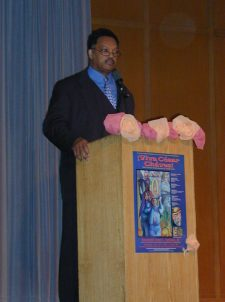

|
Stanford Review - Archive - Volume XXVIII - Issue 5
Special Fee Recipients Double-Charge Students
On April 17th, Stanford students voted for to allocate special fees to over to forty-five Voluntary Student Organizations. Among the groups receiving funds were several organizations that have a history of violating the constitutional limitations for the special fee they will receive. Several student groups 'double charge' for their services, asking students to pay once with their student fees then again with actual admission to events.
....Full story in Front Page.....by Sam Shapero
Jesse Jackson Speaks for César Chavez Day

"Si, se puede." "Yes, it can be done," was the motto of farm worker and Latino civil rights advocate César Chavez (1927-1993). Mr. Chavez is best known for his efforts to better the lives of migrant farm workers in the American southwest, particularly through the founding of the first successful farm worker's union in American history, the United Farm Workers of America. Five states, including California, now recognize Mr. Chavez's birthday as a state holiday. In recognition of César Chavez Day (April 1), Stanford students and the surrounding community have been organizing events that commemorate the life of Mr. Chavez throughout the month of April. This commemoration culminated on April 3rd at the Viva César Chavez! celebration, hosted by El Centro Chicano, MEChA, the ASSU Speaker's Bureau, and the César Chavez Foundation. The evening included an exhibition of artwork submitted by children from local schools, various speakers from Stanford, and a keynote address by Rev. Jesse Jackson, Sr.
....Full story in Front Page.....by Ming Zhu and Hilary Connell
A Word From The Editor
With the ASSU elections just over, it's a good time to think about accountability. This is a perennial favorite promise ("I won't do anything, but I'll keep you informed the whole time!"), although, as each successive group of elected officials discovers, not especially useful compared to, say, doing something useful.....Full story in Editor's Note.....by Henry Towsner
The Week in News
Find out all of the latest news around the Stanford campus.
....Full story in News
Stanford Board of Trustees and Alumni Committee to Choose New Board Members
This year, 4 new members of Stanford's Board of Trustees will be selected. The eligibility requirements do not appear to be especially stringent. Anyone who has received a degree from Stanford University, who has attended as an undergraduate for 3 or more academic quarters (not including summer quarter) with the constraint that their academic class must have graduated and that the person is not enrolled at the University, or attended as a graduate student for 3 or more academic quarters (not including summer quarter) who is no longer enrolled at the University. Also, anybody who is on the Alumni Association Board or staff, or who is a current student or faculty member, is ineligeable.
....Full story in News.....by Nels Hansen
A Cappella Spring Concerts Underway
May is here, and with it comes the yearly spring shows put on by all our campus a cappella groups. From Christian to R&B, rock to country, every musical taste is covered among the eight groups' programs. Here's the low-down to help you decide which you would enjoy the most. Although, as Mixed Company's Alissa Barnett warns, "You'll be missing out if you only see 1!"
....Full story in News.....by Ming Zhu and Hillary Connell
Stanford Offers Student Initiated Courses
Every quarter students receive e-mail about the "Student-Initiated Courses" offered that quarter; posted around bathrooms and walls across campus. But what are these courses, and how does one join them? Who provides them with funding?....Full story in News.....by Harisson Osaki
Michael Moore Visits Stanford
After an hour-long delay and major technical difficulties with the microphones last week, outspoken liberal filmmaker and author Michael Moore delivered an oration to a near-full Kresge auditorium of fans and fanatics. The speech was Mr. Moore's latest stop on his cross-country tour promoting his new book, Stupid White Men. . . .and Other Sorry Excuses for The State of the Nation, a work of systematic and controversial attacks on President Bush and other government and business officials.....Full story in Opinion.....by Joe Fairbanks
The Connection Between Olympic Skate Judging and Middle East Studies
When our lovely skate princess Michelle Kwan sat on the ice, her misfortune avoided a travesty and kept an important lesson from being exposed. Justice was done. Sarah Hughes, the younger star who had just gone supernova, won the gold she deserved, in spite of rules that committed a cardinal error for any system of judgment: they gave the less important quantity absolute priority over the more important quantity.....Full story in Opinion.....by Alec Rawls
Smoke Signals
With the ASSU election over, the only reminders are the handful (well, more than a handful) of flyers left around campus. Some might take this as a sign that the very same people who were promising to work so hard before they were elected suddenly find that they don't have enough time to remove their flyers. However the Chief chooses to take this more favorably, as proof that they want students to remember their promises and evaluate our elected officials accordingly. Based on their slogans, here are our preliminary evaluations
....Full story in Smoke Signals
Special ASSU Election Report
The ASSU elections were held earlier this month, spawning great excitement and a complete and utter lack of voter apathy. Everybody cared very deeply about these elections. EVERYBODY.
Despite the fact that the competitive candidates were all proud tree-hugging liberals, estimates put the number of redwoods killed by the omnipresent campaign fliers at "several forests." One candidate noted, "Don't tell anyone, but there's only one thing I consider more important than the environment's needs--my needs." When prompted to elaborate, Gore's spokesperson said he was unavailable for comment.
Students were quick to note their enthusiasm for the week's events. As their comments demonstrate, the fanfare of the ASSU Election lured thousands of young minds into the excitement of the frenzied race for the coveted position of "ASSU President."
....Full story in The Last Page
Page last modified on Thursday, 02-Mar-2006 00:18:33 MST.
|